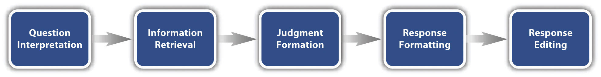
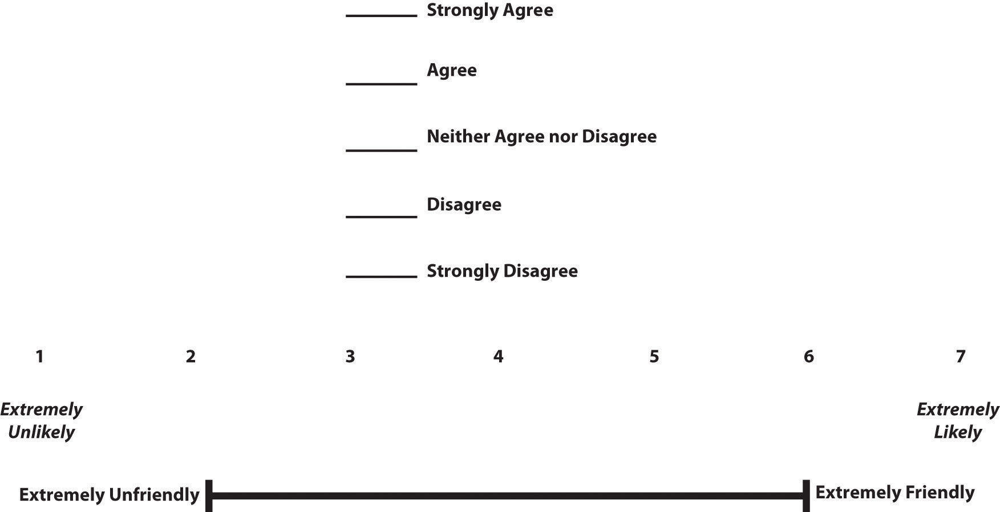

Shortly after the terrorist attacks in New York City and Washington, DC, in September of 2001, researcher Jennifer Lerner and her colleagues conducted an Internet-based survey of nearly 2,000 American teens and adults ranging in age from 13 to 88 (Lerner, Gonzalez, Small, & Fischhoff, 2003).Lerner, J. S., Gonzalez, R. M., Small, D. A., & Fischhoff, B. (2003). Effects of fear and anger on perceived risks of terrorism: A national field experiment. Psychological Science, 14, 144–150. They asked participants about their reactions to the attacks and for their judgments of various terrorism-related and other risks. Among the results were that the participants tended to overestimate most risks, that females did so more than males, and that there were no differences between teens and adults. The most interesting result, however, had to do with the fact that some participants were “primed” to feel anger by asking them what made them angry about the attacks and by presenting them with a photograph and audio clip intended to evoke anger. Others were primed to feel fear by asking them what made them fearful about the attacks and by presenting them with a photograph and audio clip intended to evoke fear. As the researchers hypothesized, the participants who were primed to feel anger perceived less risk than the participants who had been primed to feel fear—showing how risk perceptions are strongly tied to specific emotions.
The study by Lerner and her colleagues is an example of survey research in psychology—the topic of this chapter. We begin with an overview of survey research, including its definition, some history, and a bit about who conducts it and why. We then look at survey responding as a psychological process and the implications of this for constructing good survey questionnaires. Finally, we consider some issues related to actually conducting survey research, including sampling the participants and collecting the data.
Survey researchA quantitative research approach that uses self-report measures and large, carefully selected samples. is a quantitative approach that has two important characteristics. First, the variables of interest are measured using self-reports. In essence, survey researchers ask their participants (who are often called respondentsA term often used to refer to a participant in survey research. in survey research) to report directly on their own thoughts, feelings, and behaviors. Second, considerable attention is paid to the issue of sampling. In particular, survey researchers have a strong preference for large random samples because they provide the most accurate estimates of what is true in the population. In fact, survey research may be the only approach in psychology in which random sampling is routinely used. Beyond these two characteristics, almost anything goes in survey research. Surveys can be long or short. They can be conducted in person, by telephone, through the mail, or over the Internet. They can be about voting intentions, consumer preferences, social attitudes, health, or anything else that it is possible to ask people about and receive meaningful answers.
Most survey research is nonexperimental. It is used to describe single variables (e.g., the percentage of voters who prefer one presidential candidate or another, the prevalence of schizophrenia in the general population) and also to assess statistical relationships between variables (e.g., the relationship between income and health). But surveys can also be experimental. The study by Lerner and her colleagues is a good example. Their use of self-report measures and a large national sample identifies their work as survey research. But their manipulation of an independent variable (anger vs. fear) to assess its effect on a dependent variable (risk judgments) also identifies their work as experimental.
Survey research may have its roots in English and American “social surveys” conducted around the turn of the 20th century by researchers and reformers who wanted to document the extent of social problems such as poverty (Converse, 1987).Converse, J. M. (1987). Survey research in the United States: Roots and emergence, 1890–1960. Berkeley, CA: University of California Press. By the 1930s, the US government was conducting surveys to document economic and social conditions in the country. The need to draw conclusions about the entire population helped spur advances in sampling procedures. At about the same time, several researchers who had already made a name for themselves in market research, studying consumer preferences for American businesses, turned their attention to election polling. A watershed event was the presidential election of 1936 between Alf Landon and Franklin Roosevelt. A magazine called Literary Digest conducted a survey by sending ballots (which were also subscription requests) to millions of Americans. Based on this “straw poll,” the editors predicted that Landon would win in a landslide. At the same time, the new pollsters were using scientific methods with much smaller samples to predict just the opposite—that Roosevelt would win in a landslide. In fact, one of them, George Gallup, publicly criticized the methods of Literary Digest before the election and all but guaranteed that his prediction would be correct. And of course it was. (We will consider the reasons that Gallup was right later in this chapter.)
From market research and election polling, survey research made its way into several academic fields, including political science, sociology, and public health—where it continues to be one of the primary approaches to collecting new data. Beginning in the 1930s, psychologists made important advances in questionnaire design, including techniques that are still used today, such as the Likert scale. (See “What Is a Likert Scale?” in Section 9.2 "Constructing Survey Questionnaires".) Survey research has a strong historical association with the social psychological study of attitudes, stereotypes, and prejudice. Early attitude researchers were also among the first psychologists to seek larger and more diverse samples than the convenience samples of college students that were routinely used in psychology (and still are).
Survey research continues to be important in psychology today. For example, survey data have been instrumental in estimating the prevalence of various mental disorders and identifying statistical relationships among those disorders and with various other factors. The National Comorbidity Survey is a large-scale mental health survey conducted in the United States (see http://www.hcp.med.harvard.edu/ncs). In just one part of this survey, nearly 10,000 adults were given a structured mental health interview in their homes in 2002 and 2003. Table 9.1 "Some Lifetime Prevalence Results From the National Comorbidity Survey" presents results on the lifetime prevalence of some anxiety, mood, and substance use disorders. (Lifetime prevalence is the percentage of the population that develops the problem sometime in their lifetime.) Obviously, this kind of information can be of great use both to basic researchers seeking to understand the causes and correlates of mental disorders and also to clinicians and policymakers who need to understand exactly how common these disorders are.
Table 9.1 Some Lifetime Prevalence Results From the National Comorbidity Survey
| Lifetime prevalence* | |||
|---|---|---|---|
| Disorder | Total | Female | Male |
| Generalized anxiety disorder | 5.7 | 7.1 | 4.2 |
| Obsessive-compulsive disorder | 2.3 | 3.1 | 1.6 |
| Major depressive disorder | 16.9 | 20.2 | 13.2 |
| Bipolar disorder | 4.4 | 4.5 | 4.3 |
| Alcohol abuse | 13.2 | 7.5 | 19.6 |
| Drug abuse | 8.0 | 4.8 | 11.6 |
| *The lifetime prevalence of a disorder is the percentage of people in the population that develop that disorder at any time in their lives. | |||
And as the opening example makes clear, survey research can even be used to conduct experiments to test specific hypotheses about causal relationships between variables. Such studies, when conducted on large and diverse samples, can be a useful supplement to laboratory studies conducted on college students. Although this is not a typical use of survey research, it certainly illustrates the flexibility of this approach.
Discussion: Think of a question that each of the following professionals might try to answer using survey research.
The heart of any survey research project is the survey questionnaire itself. Although it is easy to think of interesting questions to ask people, constructing a good survey questionnaire is not easy at all. The problem is that the answers people give can be influenced in unintended ways by the wording of the items, the order of the items, the response options provided, and many other factors. At best, these influences add noise to the data. At worst, they result in systematic biases and misleading results. In this section, therefore, we consider some principles for constructing survey questionnaires to minimize these unintended effects and thereby maximize the reliability and validity of respondents’ answers.
Before looking at specific principles of survey questionnaire construction, it will help to consider survey responding as a psychological process.
Figure 9.1 "Model of the Cognitive Processes Involved in Responding to a Survey Item" presents a model of the cognitive processes that people engage in when responding to a survey item (Sudman, Bradburn, & Schwarz, 1996).Sudman, S., Bradburn, N. M., & Schwarz, N. (1996). Thinking about answers: The application of cognitive processes to survey methodology. San Francisco, CA: Jossey-Bass. Respondents must interpret the question, retrieve relevant information from memory, form a tentative judgment, convert the tentative judgment into one of the response options provided (e.g., a rating on a 1-to-7 scale), and finally edit their response as necessary.
Figure 9.1 Model of the Cognitive Processes Involved in Responding to a Survey Item
Consider, for example, the following questionnaire item:
How many alcoholic drinks do you consume in a typical day?
Although this item at first seems straightforward, it poses several difficulties for respondents. First, they must interpret the question. For example, they must decide whether “alcoholic drinks” include beer and wine (as opposed to just hard liquor) and whether a “typical day” is a typical weekday, typical weekend day, or both. Once they have interpreted the question, they must retrieve relevant information from memory to answer it. But what information should they retrieve, and how should they go about retrieving it? They might think vaguely about some recent occasions on which they drank alcohol, they might carefully try to recall and count the number of alcoholic drinks they consumed last week, or they might retrieve some existing beliefs that they have about themselves (e.g., “I am not much of a drinker”). Then they must use this information to arrive at a tentative judgment about how many alcoholic drinks they consume in a typical day. For example, this might mean dividing the number of alcoholic drinks they consumed last week by seven to come up with an average number per day. Then they must format this tentative answer in terms of the response options actually provided. In this case, the options pose additional problems of interpretation. For example, what does “average” mean, and what would count as “somewhat more” than average? Finally, they must decide whether they want to report the response they have come up with or whether they want to edit it in some way. For example, if they believe that they drink much more than average, they might not want to report this for fear of looking bad in the eyes of the researcher.
From this perspective, what at first appears to be a simple matter of asking people how much they drink (and receiving a straightforward answer from them) turns out to be much more complex.
Again, this complexity can lead to unintended influences on respondents’ answers. These are often referred to as context effectsAn unintended effect of the context in which a response is made. In within-subjects experiments, this can be an effect of being tested in one condition on how participants perceive stimuli or interpret their task and therefore how they respond in later conditions. In survey research, this can be an effect of the surrounding items or the response scale on responses to a particular item. because they are not related to the content of the item but to the context in which the item appears (Schwarz & Strack, 1990).Schwarz, N., & Strack, F. (1990). Context effects in attitude surveys: Applying cognitive theory to social research. In W. Stroebe & M. Hewstone (Eds.), European review of social psychology (Vol. 2, pp. 31–50). Chichester, UK: Wiley. For example, there is an item-order effectThe effect of responding to one survey item on responses to a later survey item. when the order in which the items are presented affects people’s responses. One item can change how participants interpret a later item or change the information that they retrieve to respond to later items. For example, researcher Fritz Strack and his colleagues asked college students about both their general life satisfaction and their dating frequency (Strack, Martin, & Schwarz, 1988).Strack, F., Martin, L. L., & Schwarz, N. (1988). Priming and communication: The social determinants of information use in judgments of life satisfaction. European Journal of Social Psychology, 18, 429–442. When the life satisfaction item came first, the correlation between the two was only −.12, suggesting that the two variables are only weakly related. But when the dating frequency item came first, the correlation between the two was +.66, suggesting that those who date more have a strong tendency to be more satisfied with their lives. Reporting the dating frequency first made that information more accessible in memory so that they were more likely to base their life satisfaction rating on it.
The response options provided can also have unintended effects on people’s responses (Schwarz, 1999).Schwarz, N. (1999). Self-reports: How the questions shape the answers. American Psychologist, 54, 93–105. For example, when people are asked how often they are “really irritated” and given response options ranging from “less than once a year” to “more than once a month,” they tend to think of major irritations and report being irritated infrequently. But when they are given response options ranging from “less than once a day” to “several times a month,” they tend to think of minor irritations and report being irritated frequently. People also tend to assume that middle response options represent what is normal or typical. So if they think of themselves as normal or typical, they tend to choose middle response options. For example, people are likely to report watching more television when the response options are centered on a middle option of 4 hours than when centered on a middle option of 2 hours.
Questionnaire items can be either open-ended or closed-ended. Open-ended itemsA questionnaire item that asks a question and allows respondents to respond in whatever way they want. simply ask a question and allow participants to answer in whatever way they choose. The following are examples of open-ended questionnaire items.
Open-ended items are useful when researchers do not know how participants might respond or want to avoid influencing their responses. They tend to be used when researchers have more vaguely defined research questions—often in the early stages of a research project. Open-ended items are relatively easy to write because there are no response options to worry about. However, they take more time and effort on the part of participants, and they are more difficult for the researcher to analyze because the answers must be transcribed, coded, and submitted to some form of content analysis.
Closed-ended itemsA questionnaire item that asks a question and provides a set of response options for respondents to choose from. ask a question and provide a set of response options for participants to choose from. The alcohol item just mentioned is an example, as are the following:
How old are you?
On a scale of 0 (no pain at all) to 10 (worst pain ever experienced), how much pain are you in right now?
Have you ever in your adult life been depressed for a period of 2 weeks or more?
Closed-ended items are used when researchers have a good idea of the different responses that participants might make. They are also used when researchers are interested in a well-defined variable or construct such as participants’ level of agreement with some statement, perceptions of risk, or frequency of a particular behavior. Closed-ended items are more difficult to write because they must include an appropriate set of response options. However, they are relatively quick and easy for participants to complete. They are also much easier for researchers to analyze because the responses can be easily converted to numbers and entered into a spreadsheet. For these reasons, closed-ended items are much more common.
All closed-ended items include a set of response options from which a participant must choose. For categorical variables like sex, race, or political party preference, the categories are usually listed and participants choose the one (or ones) that they belong to. For quantitative variables, a rating scale is typically provided. A rating scaleAn ordered set of response options to a closed-ended questionnaire item. is an ordered set of responses that participants must choose from. Figure 9.2 "Example Rating Scales for Closed-Ended Questionnaire Items" shows several examples. The number of response options on a typical rating scale ranges from three to 11—although five and seven are probably most common. They can consist entirely of verbal labels or they can consist of a set of numbers with verbal labels as “anchors.” In some cases, the verbal labels or numbers can be supplemented with (or even replaced by) meaningful graphics. The last rating scale shown in Figure 9.2 "Example Rating Scales for Closed-Ended Questionnaire Items" is a visual-analog scale, on which participants make a mark somewhere along the horizontal line to indicate the magnitude of their response.
Figure 9.2 Example Rating Scales for Closed-Ended Questionnaire Items
In reading about psychological research, you are likely to encounter the term Likert scale. Although this term is sometimes used to refer to almost any rating scale (e.g., a 0-to-10 life satisfaction scale), it has a much more precise meaning.
In the 1930s, researcher Rensis Likert (pronounced LICK-ert) created a new approach for measuring people’s attitudes (Likert, 1932).Likert, R. (1932). A technique for the measurement of attitudes. Archives of Psychology, 140, 1–55. It involves presenting people with several statements—including both favorable and unfavorable statements—about some person, group, or idea. Respondents then express their agreement or disagreement with each statement on a 5-point scale: Strongly Agree, Agree, Neither Agree nor Disagree, Disagree, Strongly Disagree. Numbers are assigned to each response (with reverse coding as necessary) and then summed across all items to produce a score representing the attitude toward the person, group, or idea. The entire set of items came to be called a Likert scale.
Thus unless you are measuring people’s attitude toward something by assessing their level of agreement with several statements about it, it is best to avoid calling it a Likert scale. You are probably just using a “rating scale.”
We can now consider some principles of writing questionnaire items that minimize unintended context effects and maximize the reliability and validity of participants’ responses. A rough guideline for writing questionnaire items is provided by the BRUSO model (Peterson, 2000).Peterson, R. A. (2000). Constructing effective questionnaires. Thousand Oaks, CA: Sage. An acronym, BRUSOA prescriptive model for writing good questionnaire items. They should be brief, relevant, unambiguous, specific, and objective. stands for “brief,” “relevant,” “unambiguous,” “specific,” and “objective.” Effective questionnaire items are brief and to the point. They avoid long, overly technical, or unnecessary words. This makes them easier for respondents to understand and faster for them to complete. Effective questionnaire items are also relevant to the research question. If a respondent’s sexual orientation, marital status, or income is not relevant, then items on them should probably not be included. Again, this makes the questionnaire faster to complete, but it also avoids annoying respondents with what they will rightly perceive as irrelevant or even “nosy” questions. Effective questionnaire items are also unambiguous; they can be interpreted in only one way. Part of the problem with the alcohol item presented earlier in this section is that different respondents might have different ideas about what constitutes “an alcoholic drink” or “a typical day.” Effective questionnaire items are also specific, so that it is clear to respondents what their response should be about and clear to researchers what it is about. A common problem here is closed-ended items that are “double barreled.” They ask about two conceptually separate issues but allow only one response. For example, “Please rate the extent to which you have been feeling anxious and depressed.” This item should probably be split into two separate items—one about anxiety and one about depression. Finally, effective questionnaire items are objective in the sense that they do not reveal the researcher’s own opinions or lead participants to answer in a particular way. Table 9.2 "BRUSO Model of Writing Effective Questionnaire Items, Plus Examples" shows some examples of poor and effective questionnaire items based on the BRUSO criteria.
Table 9.2 BRUSO Model of Writing Effective Questionnaire Items, Plus Examples
| Criterion | Poor | Effective |
|---|---|---|
| B—Brief | “Are you now or have you ever been the possessor of a firearm?” | “Have you ever owned a gun?” |
| R—Relevant | “What is your sexual orientation?” | Do not include this item unless it is clearly relevant to the research. |
| U—Unambiguous | “Are you a gun person?” | “Do you currently own a gun?” |
| S—Specific | “How much have you read about the new gun control measure and sales tax?” |
“How much have you read about the new gun control measure?” “How much have you read about the new sales tax?” |
| O—Objective | “How much do you support the new gun control measure?” | “What is your view of the new gun control measure?” |
For closed-ended items, it is also important to create an appropriate response scale. For categorical variables, the categories presented should generally be mutually exclusive and exhaustive. Mutually exclusive categories do not overlap. For a religion item, for example, the categories of Christian and Catholic are not mutually exclusive but Protestant and Catholic are. Exhaustive categories cover all possible responses. Although Protestant and Catholic are mutually exclusive, they are not exhaustive because there are many other religious categories that a respondent might select: Jewish, Hindu, Buddhist, and so on. In many cases, it is not feasible to include every possible category, in which case an Other category, with a space for the respondent to fill in a more specific response, is a good solution. If respondents could belong to more than one category (e.g., race), they should be instructed to choose all categories that apply.
For rating scales, five or seven response options generally allow about as much precision as respondents are capable of. However, numerical scales with more options can sometimes be appropriate. For dimensions such as attractiveness, pain, and likelihood, a 0-to-10 scale will be familiar to many respondents and easy for them to use. Regardless of the number of response options, the most extreme ones should generally be “balanced” around a neutral or modal midpoint. An example of an unbalanced rating scale measuring perceived likelihood might look like this:
Unlikely | Somewhat Likely | Likely | Very Likely | Extremely Likely
A balanced version might look like this:
Extremely Unlikely | Somewhat Unlikely | As Likely as Not | Somewhat Likely | Extremely Likely
Note, however, that a middle or neutral response option does not have to be included. Researchers sometimes choose to leave it out because they want to encourage respondents to think more deeply about their response and not simply choose the middle option by default.
Numerical rating scales often begin at 1 and go up to 5 or 7. However, they can also begin at 0 if the lowest response option means the complete absence of something (e.g., no pain). They can also have 0 as their midpoint, but it is important to think about how this might change people’s interpretation of the response options. For example, when asked to rate how successful in life they have been on a 0-to-10 scale, many people use numbers in the lower half of the scale because they interpret this to mean that they have been only somewhat successful in life. But when asked to rate how successful they have been in life on a −5 to +5 scale, very few people use numbers in the lower half of the scale because they interpret this to mean they have actually been unsuccessful in life (Schwarz, 1999).Schwarz, N. (1999). Self-reports: How the questions shape the answers. American Psychologist, 54, 93–105.
Writing effective items is only one part of constructing a survey questionnaire. For one thing, every survey questionnaire should have a written or spoken introduction that serves two basic functions (Peterson, 2000).Peterson, R. A. (2000). Constructing effective questionnaires. Thousand Oaks, CA: Sage. One is to encourage respondents to participate in the survey. In many types of research, such encouragement is not necessary either because participants do not know they are in a study (as in naturalistic observation) or because they are part of a subject pool and have already shown their willingness to participate by signing up and showing up for the study. Survey research usually catches respondents by surprise when they answer their phone, go to their mailbox, or check their e-mail—and the researcher must make a good case for why they should agree to participate. Thus the introduction should briefly explain the purpose of the survey and its importance, provide information about the sponsor of the survey (university-based surveys tend to generate higher response rates), acknowledge the importance of the respondent’s participation, and describe any incentives for participating.
The second function of the introduction is to establish informed consent. Remember that this means describing to respondents everything that might affect their decision to participate. This includes the topics covered by the survey, the amount of time it is likely to take, the respondent’s option to withdraw at any time, confidentiality issues, and so on. Written consent forms are not typically used in survey research, so it is important that this part of the introduction be well documented and presented clearly and in its entirety to every respondent.
The introduction should be followed by the substantive questionnaire items. But first, it is important to present clear instructions for completing the questionnaire, including examples of how to use any unusual response scales. Remember that this is the point at which respondents are usually most interested and least fatigued, so it is good practice to start with the most important items for purposes of the research and proceed to less important items. Items should also be grouped by topic or by type. For example, items using the same rating scale (e.g., a 5-point agreement scale) should be grouped together if possible to make things faster and easier for respondents. Demographic items are often presented last because they are least interesting to participants but also easy to answer in the event respondents have become tired or bored. Of course, any survey should end with an expression of appreciation to the respondent.
Practice: Write survey questionnaire items for each of the following general questions. In some cases, a series of items, rather than a single item, might be necessary.
In this section, we consider how to go about conducting a survey. We first consider the issue of sampling, followed by some different methods of actually collecting survey data.
Essentially all psychological research involves sampling—selecting a sample to study from the population of interest. Sampling falls into two broad categories. Probability samplingAn approach to sampling in which the researcher can specify the probability that each member of the population will be selected. occurs when the researcher can specify the probability that each member of the population will be selected for the sample. Nonprobability samplingAn approach to sampling in which the researcher cannot specify the probability that each member of the population will be selected. Convenience sampling is an example. occurs when the researcher cannot specify these probabilities. Most psychological research involves nonprobability sampling. Convenience sampling—studying individuals who happen to be nearby and willing to participate—is a very common form of nonprobability sampling used in psychological research.
Survey researchers, however, are much more likely to use some form of probability sampling. This is because the goal of most survey research is to make accurate estimates about what is true in a particular population, and these estimates are most accurate when based on a probability sample. For example, it is important for survey researchers to base their estimates of election outcomes—which are often decided by only a few percentage points—on probability samples of likely registered voters.
Compared with nonprobability sampling, probability sampling requires a very clear specification of the population, which of course depends on the research questions to be answered. The population might be all registered voters in the state of Arkansas, all American consumers who have purchased a car in the past year, women in the United States over 40 years old who have received a mammogram in the past decade, or all the alumni of a particular university. Once the population has been specified, probability sampling requires a sampling frameA list of all the members of the population, from which the actual sample is selected.. This is essentially a list of all the members of the population from which to select the respondents. Sampling frames can come from a variety of sources, including telephone directories, lists of registered voters, and hospital or insurance records. In some cases, a map can serve as a sampling frame, allowing for the selection of cities, streets, or households.
There are a variety of different probability sampling methods. Simple random samplingSampling where each member of the population has an equal probability of being selected. is done in such a way that each individual in the population has an equal probability of being selected for the sample. This could involve putting the names of all individuals in the sampling frame into a hat, mixing them up, and then drawing out the number needed for the sample. Given that most sampling frames take the form of computer files, random sampling is more likely to involve computerized sorting or selection of respondents. A common approach in telephone surveys is random-digit dialing, in which a computer randomly generates phone numbers from among the possible phone numbers within a given geographic area.
A common alternative to simple random sampling is stratified random samplingSampling where the population is first divided into different subgroups or strata and a separate random sample is selected from each stratum., in which the population is divided into different subgroups or “strata” (usually based on demographic characteristics) and then a random sample is taken from each “stratum.” Stratified random sampling can be used to select a sample in which the proportion of respondents in each of various subgroups matches the proportion in the population. For example, because about 12.5% of the US population is Black, stratified random sampling can be used to ensure that a survey of 1,000 American adults includes about 125 Black respondents. Stratified random sampling can also be used to sample extra respondents from particularly small subgroups—allowing valid conclusions to be drawn about those subgroups. For example, because Asian Americans make up a fairly small percentage of the US population (about 4.5%), a simple random sample of 1,000 American adults might include too few Asian Americans to draw any conclusions about them as distinct from any other subgroup. If this is important to the research question, however, then stratified random sampling could be used to ensure that enough Asian American respondents are included in the sample to draw valid conclusions about Asian Americans as a whole.
Yet another type of probability sampling is cluster samplingSampling where larger clusters of individuals (e.g., cities, households) are sampled first and then individuals are sampled from these clusters., in which larger clusters of individuals are randomly sampled and then individuals within each cluster are randomly sampled. For example, to select a sample of small-town residents in the United States, a researcher might randomly select several small towns and then randomly select several individuals within each town. Cluster sampling is especially useful for surveys that involve face-to-face interviewing because it minimizes the amount of traveling that the interviewers must do. For example, instead of traveling to 200 small towns to interview 200 residents, a research team could travel to 10 small towns and interview 20 residents of each. The National Comorbidity Survey was done using a form of cluster sampling.
How large does a survey sample need to be? In general, this depends on two factors. One is the level of confidence in the result that the researcher wants. The larger the sample, the closer any statistic based on that sample will tend to be to the corresponding value in the population. The other factor is the budget of the study. Larger samples provide greater confidence, but they take more time, effort, and money to obtain. Taking these two factors into account, most survey research uses sample sizes that range from about 100 to about 1,000.
Why is a sample of 1,000 considered to be adequate for most survey research—even when the population is much larger than that? Consider, for example, that a sample of only 1,000 registered voters is generally considered a good sample of the roughly 120 million registered voters in the US population—even though it includes only about 0.0008% of the population! The answer is a bit surprising.
One part of the answer is that a statistic based on a larger sample will tend to be closer to the population value and that this can be characterized mathematically. Imagine, for example, that in a sample of registered voters, exactly 50% say they intend to vote for the incumbent. If there are 100 voters in this sample, then there is a 95% chance that the true percentage in the population is between 40 and 60. But if there are 1,000 voters in the sample, then there is a 95% chance that the true percentage in the population is between 47 and 53. Although this “95% confidence interval” continues to shrink as the sample size increases, it does so at a slower rate. For example, if there are 2,000 voters in the sample, then this only reduces the 95% confidence interval to 48 to 52. In many situations, the small increase in confidence beyond a sample size of 1,000 is not considered to be worth the additional time, effort, and money.
Another part of the answer—and perhaps the more surprising part—is that confidence intervals depend only on the size of the sample and not on the size of the population. So a sample of 1,000 would produce a 95% confidence interval of 47 to 53 regardless of whether the population size was a hundred thousand, a million, or a hundred million.
Probability sampling was developed in large part to address the issue of sampling bias. Sampling biasOccurs when a sample is selected in such a way that it is not representative of the entire population and therefore produces inaccurate results. occurs when a sample is selected in such a way that it is not representative of the entire population and therefore produces inaccurate results. This was the reason that the Literary Digest straw poll was so far off in its prediction of the 1936 presidential election. The mailing lists used came largely from telephone directories and lists of registered automobile owners, which overrepresented wealthier people, who were more likely to vote for Landon. Gallup was successful because he knew about this bias and found ways to sample less wealthy people as well.
There is one form of sampling bias that even careful random sampling is subject to. It is almost never the case that everyone selected for the sample actually responds to the survey. Some may have died or moved away, and others may decline to participate because they are too busy, are not interested in the survey topic, or do not participate in surveys on principle. If these survey nonresponders differ from survey responders in systematic ways, then this can produce nonresponse biasA type of sampling bias in which those who do not respond to the survey differ systematically from those who do, producing misleading results.. For example, in a mail survey on alcohol consumption, researcher Vivienne Lahaut and colleagues found that only about half the sample responded after the initial contact and two follow-up reminders (Lahaut, Jansen, van de Mheen, & Garretsen, 2002).Lahaut, V. M. H. C. J., Jansen, H. A. M., van de Mheen, D., & Garretsen, H. F. L. (2002). Non-response bias in a sample survey on alcohol consumption. Alcohol and Alcoholism, 37, 256–260. The danger here is that the half who responded might have different patterns of alcohol consumption than the half who did not, which could lead to inaccurate conclusions on the part of the researchers. So to test for nonresponse bias, the researchers later made unannounced visits to the homes of a subset of the nonresponders—coming back up to five times if they did not find them at home. They found that the original nonresponders included an especially high proportion of abstainers (nondrinkers), which meant that their estimates of alcohol consumption based only on the original responders were too high.
Although there are methods for statistically correcting for nonresponse bias, they are based on assumptions about the nonresponders—for example, that they are more similar to late responders than to early responders—which may not be correct. For this reason, the best approach to minimizing nonresponse bias is to minimize the number of nonresponders—that is, to maximize the response rate. There is a large research literature on the factors that affect survey response rates (Groves et al., 2004).Groves, R. M., Fowler, F. J., Couper, M. P., Lepkowski, J. M., Singer, E., & Tourangeau, R. (2004). Survey methodology. Hoboken, NJ: Wiley. In general, in-person interviews have the highest response rates, followed by telephone surveys, and then mail and Internet surveys. Among the other factors that increase response rates are sending potential respondents a short prenotification message informing them that they will be asked to participate in a survey in the near future and sending simple follow-up reminders to nonresponders after a few weeks. The perceived length and complexity of the survey also makes a difference, which is why it is important to keep survey questionnaires as short, simple, and on topic as possible. Finally, offering an incentive—especially cash—is a reliable way to increase response rates.
The four main ways to conduct surveys are through in-person interviews, by telephone, through the mail, and over the Internet. As with other aspects of survey design, the choice depends on both the researcher’s goals and the budget. In-person interviews have the highest response rates and provide the closest personal contact with respondents. Personal contact can be important, for example, when the interviewer must see and make judgments about respondents, as is the case with some mental health interviews. But in-person interviewing is by far the most costly approach. Telephone surveys have lower response rates and still provide some personal contact with respondents. They can also be costly but are generally less so than in-person interviews. Traditionally, telephone directories have provided fairly comprehensive sampling frames. Mail surveys are less costly still but generally have even lower response rates—making them most susceptible to nonresponse bias.
Not surprisingly, Internet surveys are becoming more common. They are increasingly easy to construct and use (see “Online Survey Creation”). Although initial contact can be made by mail with a link provided to the survey, this approach does not necessarily produce higher response rates than an ordinary mail survey. A better approach is to make initial contact by e-mail with a link directly to the survey. This can work well when the population consists of the members of an organization who have known e-mail addresses and regularly use them (e.g., a university community). For other populations, it can be difficult or impossible to find a comprehensive list of e-mail addresses to serve as a sampling frame. Alternatively, a request to participate in the survey with a link to it can be posted on websites known to be visited by members of the population. But again it is very difficult to get anything approaching a random sample this way because the members of the population who visit the websites are likely to be different from the population as a whole. However, Internet survey methods are in rapid development. Because of their low cost, and because more people are online than ever before, Internet surveys are likely to become the dominant approach to survey data collection in the near future.
There are now several online tools for creating online questionnaires. After a questionnaire is created, a link to it can then be e-mailed to potential respondents or embedded in a web page. The following websites are among those that offer free accounts. Although the free accounts limit the number of questionnaire items and the number of respondents, they can be useful for doing small-scale surveys and for practicing the principles of good questionnaire construction.
Discussion: If possible, identify an appropriate sampling frame for each of the following populations. If there is no appropriate sampling frame, explain why.